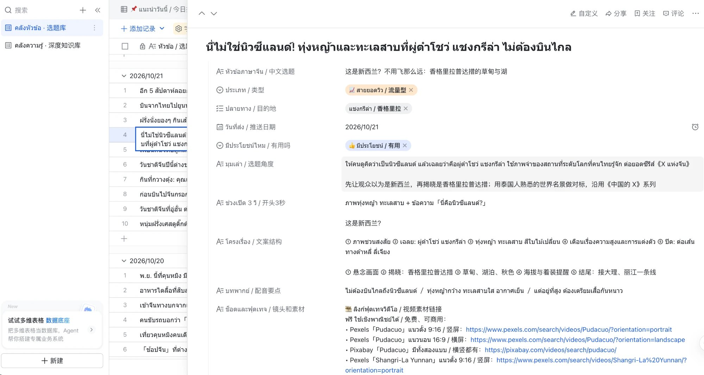

Travel & Tourism Trend Assistant
Built for a Thai travel & tourism content team that makes China travel videos for Southeast Asian viewers. The pain: deciding what to shoot each day. Thai colleagues spent every morning scrolling platforms, across a cultural gap. So I built an assistant that runs daily: search, filter, break down, draft a plan, push to Lark. The team taps 👍 and it learns for next week.
Overall frame
Runs automatically at 8:40 every day
BeforePeople scroll platforms every day looking for topicsAfterOne card + one table; the team only taps 👍 👎
01Search viral topicsAuto
- Every day, search Southeast Asian and Chinese travel trending topics and low-follower viral videos, filter by the team's criteria, then categorize
02Viral breakdownAI
- Quick breakdown: one-line viral formula per item, plus a reference plan
- Deep breakdown: for viral topics or China–Thailand cultural differences, write a knowledge card so the Thai team understands the Chinese context first, then makes the video
03Push and storeLark
- Daily digest goes to the Lark group chat and is written into the topic library and deep knowledge base at the same time
04Self-learningTeam + AI
- Search terms: tags go stale and traffic shifts; good terms get promoted, stale ones retired
- Deep knowledge: the knowledge base builds up day by day, so content gets deeper
- Team preferences: the team taps 👍 👎 in the table; useful directions get more breakdowns, useless ones stop
What it looks like

